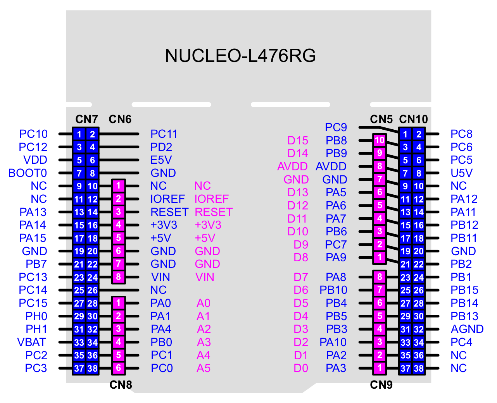

Knižnica pyb.Pin#
MicroPython obsahuje knižnicu pyb s modulom Pin. Riadenie pinov je prostredníctvom ich mena, z dôvodu kompatibility sú piny na kitoch Nucleo označované podľa modulov Arduina ako aj podľa ich pripojenia k vývodom mikrokontroléra. Na obrázku je zapojenie kitu s procesorom STM32L476, zapojenie kitov s iným mikrokontrolérom môže byť odlišné, podrobnosti sú v dokumentácii.
Červeným textom sú označené piny (dutinky) na konektor Morpheo podľa Arduino, modrým textom sú označené piny podľa ich pripojenie k mikrokontroléru. Konverzná tabulka medzi oboma konektormi pre procesor STM32L476 je v súbore pins_L476.
{kind=link}

Obr. 27 Označenie pinov modulu Nucleo-64 s procesorom STM32L476.#
Poznámka
V Arduine môže mať jeden pin niekoľko označení, napríklad pin v Nucleo-64 označený ako PA5 má v Arduine označenie D13, PA5, LED_GREEN, LED_ORANGE, LED_RED.
Inicializácia#
Pin.init(mode, pull=Pin.PULL_NONE, *, value=None, alt=-1)
mode
Pin.IN - configure the pin for input;
Pin.OUT_PP - configure the pin for output, with push-pull control;
Pin.OUT_OD - configure the pin for output, with open-drain control;
Pin.ALT - configure the pin for alternate function, input or output;
Pin.AF_PP - configure the pin for alternate function, push-pull;
Pin.AF_OD - configure the pin for alternate function, open-drain;
Pin.ANALOG - configure the pin for analog.
pull
Pin.PULL_NONE - no pull up or down resistors;
Pin.PULL_UP - enable the pull-up resistor;
Pin.PULL_DOWN - enable the pull-down resistor.
Funkcie pre riadenie portu#
Pin.value([value]) Get or set the digital logic level of the pin:
Pin.__str__() Return a string describing the pin object.
Pin.af() Returns the currently configured alternate-function of the pin
Pin.af_list() Returns an array of alternate functions available for this pin.
Pin.gpio() Returns the base address of the GPIO block associated with this pin.
Pin.mode() Returns the currently configured mode of the pin.
Pin.name() Get the pin name.
Pin.names() Returns the cpu and board names for this pin.
Pin.pin() Get the pin number.
Pin.port() Get the pin port.
Pin.pull() Returns the currently configured pull of the pin